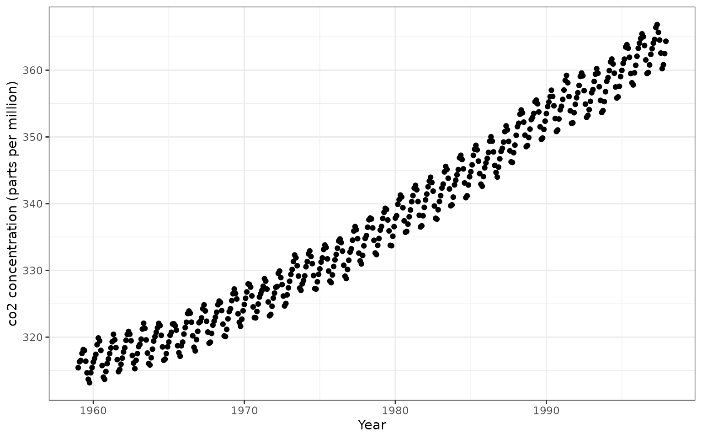
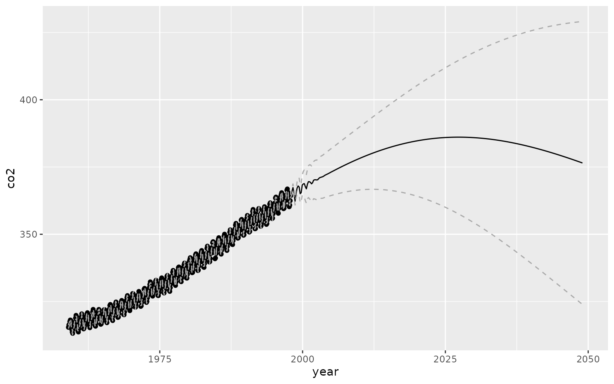

Analysis of CO2 data with Gaussian Processes
time_series_analysis.RmdLearner Outcomes:
This vignette demonstrates a simplified version of the Mauna Loa case
study presented by Rasmussen and Williams (2006,
119–21), using zoomerGP. The analysis involves
fitting an additive GP model to co2 data collected at the Mauna Loa
Observatory from from 1959 to 1997. The data are included with R in
the co2 dataset.
After completing the vignette, you should be able to:
- Be able to write and fit a basic GP model with Empirical Bayes using
zoomerGP - Extract predictions from this model and plot them
- Use
zoomerGPto generate predictions from sub-components of the model and examine them
Getting Started: Setup and Data Processing
First, we load the libraries we will use for data analysis
(zoomerGP for fitting the GP models and
ggplot2 for plotting the raw data). We then transform the
built-in co2 dataset to a tidy dataframe with one row per
observation.
library(zoomerGP)
library(ggplot2)
data <- data.frame(
year = (1:length(co2) - 1)/12 + 1959,
co2 = c(co2)
)
head(data)
#> year co2
#> 1 1959.000 315.42
#> 2 1959.083 316.31
#> 3 1959.167 316.50
#> 4 1959.250 317.56
#> 5 1959.333 318.13
#> 6 1959.417 318.00Using ggplot2, we can then plot the raw data:
ggplot(data, aes(x=year, y=co2)) +
geom_point() +
theme_bw() +
xlab("Year") +
ylab("co2 concentration (parts per million)")
## Specifying and Fitting the ModelThe data appear to be reflective of a long-term process combined with a seasonal process which repeats every 12 months. This motivates a simplified version of the model described by Rassmusen and Williams (2005), which describes the co2 concentration observed at a given time as follows:
Where is an intercept term, and is a noise term. and are mean-zero Gaussian processes that absorb the long-term and periodic components, respectively. Specifically, we parameterize the kernels as described below. The formulas for the RBF and Periodic kernels are are taken from Bayesian Data Analysis, 3rd edition (Gelman et al. 2021, 515).
- absorbs the long-term trend and is parameterized with an RBF kernel:
- absorbs the periodic trend, and is parameterized by an RBF kernel multiplied by a periodic kernel with a period of one year: . The inclusion of the RBF kernel allows for the periodic component to change slightly over time.
zoomerGP provides a convenient formula syntax to
describe this model, which we then fit using Empirical Bayes.
set.seed(1)
gp_model <- gaussian_process(
co2 ~ periodic(year, periods = c(1.0))*rbf(year) + rbf(year),
data = data,
sparse = F,
)
gp_model
#> A Gaussian Process model with 468 observations
#> Log-Likelihood: -281.155936
#> R-Squared: 0.999801
#> Kernel Specification:
#> └── (A) Plus (+)
#> ├── (AA) Times (*)
#> │ ├── (AAA) Periodic Kernel
#> │ └── (AAB) RBF Kernel
#> └── (AB) RBF KernelExamining the model fit object, we can see the log-likelihood, r-squared and.
prediction_data <- data.frame(year = 1959 + seq(0,90, length.out = 500))
prediction_data$preds <- predict(gp_model, prediction_data)[,1]
prediction_data$pred_var <- predict(gp_model, prediction_data)[,3]
prediction_data$ci_lo <- prediction_data$preds + 2*sqrt(prediction_data$pred_var)
prediction_data$ci_hi <- prediction_data$preds - 2*sqrt(prediction_data$pred_var)
ggplot() +
geom_point(data = data, aes(x=year, y=co2)) +
geom_line(data = prediction_data, aes(x=year, y=preds)) +
geom_line(data = prediction_data, aes(x=year, y=ci_hi), linetype = 2, col = "darkgrey") +
geom_line(data = prediction_data, aes(x=year, y=ci_lo), linetype = 2, col = "darkgrey") 
If we want to extract the periodic component, we can easily do so by isolating the “”